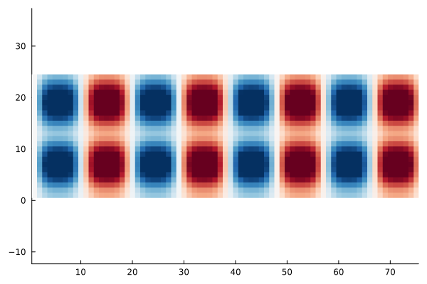

Analysing SCF convergence


The goal of this example is to explain the differing convergence behaviour of SCF algorithms depending on the choice of the mixing. For this we look at the eigenpairs of the Jacobian governing the SCF convergence, that is
\[1 - α P^{-1} \varepsilon^\dagger \qquad \text{with} \qquad \varepsilon^\dagger = (1-\chi_0 K).\]
where $α$ is the damping $P^{-1}$ is the mixing preconditioner (e.g. KerkerMixing, LdosMixing) and $\varepsilon^\dagger$ is the dielectric operator.
We thus investigate the largest and smallest eigenvalues of $(P^{-1} \varepsilon^\dagger)$ and $\varepsilon^\dagger$. The ratio of largest to smallest eigenvalue of this operator is the condition number
\[\kappa = \frac{\lambda_\text{max}}{\lambda_\text{min}},\]
which can be related to the rate of convergence of the SCF. The smaller the condition number, the faster the convergence. For more details on SCF methods, see Self-consistent field methods.
For our investigation we consider a crude aluminium setup:
using ASEconvert
using DFTK
using LazyArtifacts
ase_Al = ase.build.bulk("Al"; cubic=true) * pytuple((4, 1, 1))
system_Al = attach_psp(pyconvert(AbstractSystem, ase_Al);
Al=artifact"pd_nc_sr_pbe_standard_0.4.1_upf/Al.upf")FlexibleSystem(Al₁₆, periodic = TTT):
bounding_box : [ 16.2 0 0;
0 4.05 0;
0 0 4.05]u"Å"
.---------------------------------------.
/| |
* | |
|Al Al Al Al |
| | |
| .--Al--------Al--------Al--------Al-----.
|/ Al Al Al Al /
Al--------Al--------Al--------Al--------*
and we discretise:
model_Al = model_LDA(system_Al; temperature=1e-3, symmetries=false)
basis_Al = PlaneWaveBasis(model_Al; Ecut=7, kgrid=[1, 1, 1]);On aluminium (a metal) already for moderate system sizes (like the 8 layers we consider here) the convergence without mixing / preconditioner is slow:
# Note: DFTK uses the self-adapting LdosMixing() by default, so to truly disable
# any preconditioning, we need to supply `mixing=SimpleMixing()` explicitly.
scfres_Al = self_consistent_field(basis_Al; tol=1e-12, mixing=SimpleMixing());n Energy log10(ΔE) log10(Δρ) Diag Δtime
--- --------------- --------- --------- ---- ------
1 -35.98047751973 -0.86 11.0 426ms
2 -35.91903975120 + -1.21 -1.49 1.0 86.5ms
3 +25.33658218164 + 1.79 -0.17 7.0 221ms
4 -35.88420121270 1.79 -1.19 7.0 232ms
5 -35.32482354428 + -0.25 -1.13 3.0 140ms
6 -35.51013675913 -0.73 -1.21 4.0 173ms
7 -35.98742917437 -0.32 -2.00 3.0 667ms
8 -35.98563398564 + -2.75 -2.04 3.0 140ms
9 -35.98673231024 -2.96 -2.16 2.0 104ms
10 -35.98812523721 -2.86 -2.12 2.0 106ms
11 -35.98920219835 -2.97 -2.38 2.0 106ms
12 -35.98922346982 -4.67 -2.60 2.0 108ms
13 -35.98961632341 -3.41 -2.97 1.0 91.0ms
14 -35.98961924600 -5.53 -2.93 2.0 126ms
15 -35.98922598374 + -3.41 -2.72 5.0 571ms
16 -35.98913198921 + -4.03 -2.68 4.0 172ms
17 -35.98942836801 -3.53 -2.89 5.0 152ms
18 -35.98946293594 -4.46 -2.95 3.0 139ms
19 -35.98962538806 -3.79 -3.60 2.0 117ms
20 -35.98963051156 -5.29 -3.84 4.0 142ms
21 -35.98963137091 -6.07 -4.05 1.0 110ms
22 -35.98963187145 -6.30 -4.24 2.0 100ms
23 -35.98963191814 -7.33 -4.50 2.0 127ms
24 -35.98963176310 + -6.81 -4.17 3.0 132ms
25 -35.98963195789 -6.71 -4.66 2.0 113ms
26 -35.98963198402 -7.58 -5.20 4.0 122ms
27 -35.98963198578 -8.75 -5.24 2.0 127ms
28 -35.98963198590 -9.91 -5.60 1.0 91.7ms
29 -35.98963198599 -10.09 -5.74 2.0 99.1ms
30 -35.98963198499 + -9.00 -5.54 3.0 157ms
31 -35.98963198545 -9.34 -5.65 3.0 136ms
32 -35.98963198523 + -9.66 -5.56 3.0 137ms
33 -35.98963198596 -9.14 -5.88 2.0 109ms
34 -35.98963198613 -9.77 -6.84 2.0 118ms
35 -35.98963198613 + -11.77 -6.62 4.0 172ms
36 -35.98963198613 -11.54 -7.16 2.0 109ms
37 -35.98963198613 -12.66 -7.09 3.0 126ms
38 -35.98963198613 -13.19 -7.70 1.0 93.5ms
39 -35.98963198613 -14.15 -7.86 2.0 127ms
40 -35.98963198613 -13.85 -8.10 2.0 102ms
41 -35.98963198613 -14.15 -8.30 2.0 100ms
42 -35.98963198613 + -Inf -8.23 5.0 129ms
43 -35.98963198613 + -13.85 -8.50 2.0 109ms
44 -35.98963198613 -14.15 -9.12 2.0 98.1ms
45 -35.98963198613 -14.15 -8.74 4.0 154ms
46 -35.98963198613 + -14.15 -8.80 4.0 146ms
47 -35.98963198613 + -Inf -9.16 4.0 161ms
48 -35.98963198613 -14.15 -9.27 2.0 109ms
49 -35.98963198613 + -14.15 -9.40 3.0 125ms
50 -35.98963198613 -14.15 -9.74 2.0 103ms
51 -35.98963198613 + -13.85 -9.99 2.0 127ms
52 -35.98963198613 -13.85 -9.89 4.0 125ms
53 -35.98963198613 + -Inf -10.45 2.0 98.5ms
54 -35.98963198613 + -13.85 -10.24 3.0 138ms
55 -35.98963198613 -13.85 -10.99 2.0 113ms
56 -35.98963198613 + -Inf -10.97 3.0 136ms
57 -35.98963198613 + -Inf -10.46 4.0 180ms
58 -35.98963198613 + -13.85 -11.27 3.0 126ms
59 -35.98963198613 -13.85 -11.31 3.0 136ms
60 -35.98963198613 + -Inf -11.67 3.0 119ms
61 -35.98963198613 + -14.15 -11.80 2.0 127ms
62 -35.98963198613 -14.15 -12.06 2.0 98.2mswhile when using the Kerker preconditioner it is much faster:
scfres_Al = self_consistent_field(basis_Al; tol=1e-12, mixing=KerkerMixing());n Energy log10(ΔE) log10(Δρ) Diag Δtime
--- --------------- --------- --------- ---- ------
1 -35.97886667018 -0.86 11.0 356ms
2 -35.98705328374 -2.09 -1.34 1.0 88.9ms
3 -35.98735971960 -3.51 -1.62 4.0 131ms
4 -35.98948937074 -2.67 -2.29 1.0 89.2ms
5 -35.98945194835 + -4.43 -2.53 9.0 150ms
6 -35.98954067122 -4.05 -2.43 2.0 104ms
7 -35.98960597206 -4.19 -3.15 1.0 93.5ms
8 -35.98962347343 -4.76 -3.40 3.0 137ms
9 -35.98962947025 -5.22 -3.47 5.0 122ms
10 -35.98963014000 -6.17 -3.81 1.0 91.6ms
11 -35.98963178451 -5.78 -4.29 1.0 92.3ms
12 -35.98963198142 -6.71 -4.81 3.0 140ms
13 -35.98963198537 -8.40 -5.06 9.0 152ms
14 -35.98963198602 -9.19 -5.50 3.0 135ms
15 -35.98963198608 -10.21 -5.87 7.0 132ms
16 -35.98963198611 -10.53 -5.98 3.0 135ms
17 -35.98963198613 -10.79 -6.43 1.0 100ms
18 -35.98963198613 -11.39 -6.75 3.0 118ms
19 -35.98963198613 -12.31 -6.70 4.0 144ms
20 -35.98963198613 -12.55 -6.98 2.0 100ms
21 -35.98963198613 -13.11 -7.52 2.0 111ms
22 -35.98963198613 -13.45 -7.69 3.0 140ms
23 -35.98963198613 -14.15 -7.86 1.0 94.0ms
24 -35.98963198613 + -Inf -8.31 5.0 122ms
25 -35.98963198613 + -14.15 -8.47 3.0 128ms
26 -35.98963198613 -14.15 -8.84 5.0 141ms
27 -35.98963198613 + -13.85 -9.06 3.0 138ms
28 -35.98963198613 + -Inf -9.32 2.0 101ms
29 -35.98963198613 -13.67 -9.91 2.0 110ms
30 -35.98963198613 + -14.15 -9.99 4.0 143ms
31 -35.98963198613 + -Inf -10.35 2.0 104ms
32 -35.98963198613 + -Inf -10.61 9.0 164ms
33 -35.98963198613 + -Inf -10.90 2.0 130ms
34 -35.98963198613 + -14.15 -11.35 1.0 95.6ms
35 -35.98963198613 + -14.15 -11.66 4.0 145ms
36 -35.98963198613 -14.15 -11.83 1.0 97.0ms
37 -35.98963198613 + -Inf -12.22 2.0 103msGiven this scfres_Al we construct functions representing $\varepsilon^\dagger$ and $P^{-1}$:
# Function, which applies P^{-1} for the case of KerkerMixing
Pinv_Kerker(δρ) = DFTK.mix_density(KerkerMixing(), basis_Al, δρ)
# Function which applies ε† = 1 - χ0 K
function epsilon(δρ)
δV = apply_kernel(basis_Al, δρ; ρ=scfres_Al.ρ)
χ0δV = apply_χ0(scfres_Al, δV)
δρ - χ0δV
endepsilon (generic function with 1 method)With these functions available we can now compute the desired eigenvalues. For simplicity we only consider the first few largest ones.
using KrylovKit
λ_Simple, X_Simple = eigsolve(epsilon, randn(size(scfres_Al.ρ)), 3, :LM;
tol=1e-3, eager=true, verbosity=2)
λ_Simple_max = maximum(real.(λ_Simple))44.387452168436795The smallest eigenvalue is a bit more tricky to obtain, so we will just assume
λ_Simple_min = 0.9520.952This makes the condition number around 30:
cond_Simple = λ_Simple_max / λ_Simple_min46.625474966845374This does not sound large compared to the condition numbers you might know from linear systems.
However, this is sufficient to cause a notable slowdown, which would be even more pronounced if we did not use Anderson, since we also would need to drastically reduce the damping (try it!).
Having computed the eigenvalues of the dielectric matrix we can now also look at the eigenmodes, which are responsible for the bad convergence behaviour. The largest eigenmode for example:
using Statistics
using Plots
mode_xy = mean(real.(X_Simple[1]), dims=3)[:, :, 1, 1] # Average along z axis
heatmap(mode_xy', c=:RdBu_11, aspect_ratio=1, grid=false,
legend=false, clim=(-0.006, 0.006))This mode can be physically interpreted as the reason why this SCF converges slowly. For example in this case it displays a displacement of electron density from the centre to the extremal parts of the unit cell. This phenomenon is called charge-sloshing.
We repeat the exercise for the Kerker-preconditioned dielectric operator:
λ_Kerker, X_Kerker = eigsolve(Pinv_Kerker ∘ epsilon,
randn(size(scfres_Al.ρ)), 3, :LM;
tol=1e-3, eager=true, verbosity=2)
mode_xy = mean(real.(X_Kerker[1]), dims=3)[:, :, 1, 1] # Average along z axis
heatmap(mode_xy', c=:RdBu_11, aspect_ratio=1, grid=false,
legend=false, clim=(-0.006, 0.006))
Clearly the charge-sloshing mode is no longer dominating.
The largest eigenvalue is now
maximum(real.(λ_Kerker))4.685459539827291Since the smallest eigenvalue in this case remains of similar size (it is now around 0.8), this implies that the conditioning improves noticeably when KerkerMixing is used.
Note: Since LdosMixing requires solving a linear system at each application of $P^{-1}$, determining the eigenvalues of $P^{-1} \varepsilon^\dagger$ is slightly more expensive and thus not shown. The results are similar to KerkerMixing, however.
We could repeat the exercise for an insulating system (e.g. a Helium chain). In this case you would notice that the condition number without mixing is actually smaller than the condition number with Kerker mixing. In other words employing Kerker mixing makes the convergence worse. A closer investigation of the eigenvalues shows that Kerker mixing reduces the smallest eigenvalue of the dielectric operator this time, while keeping the largest value unchanged. Overall the conditioning thus workens.
Takeaways:
- For metals the conditioning of the dielectric matrix increases steeply with system size.
- The Kerker preconditioner tames this and makes SCFs on large metallic systems feasible by keeping the condition number of order 1.
- For insulating systems the best approach is to not use any mixing.
- The ideal mixing strongly depends on the dielectric properties of system which is studied (metal versus insulator versus semiconductor).